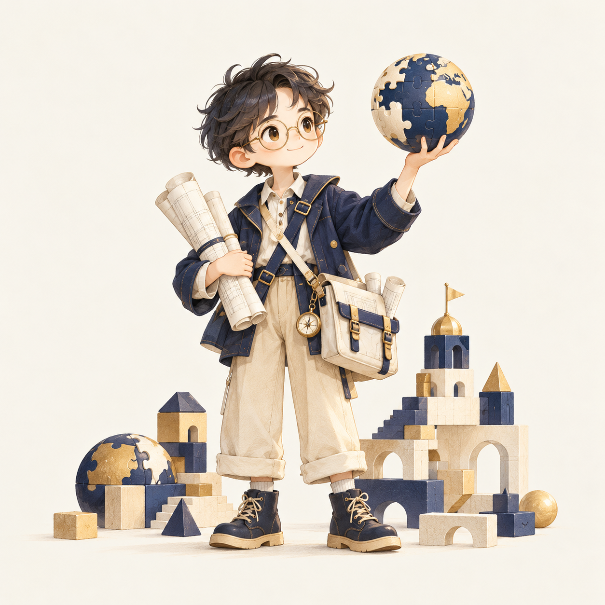
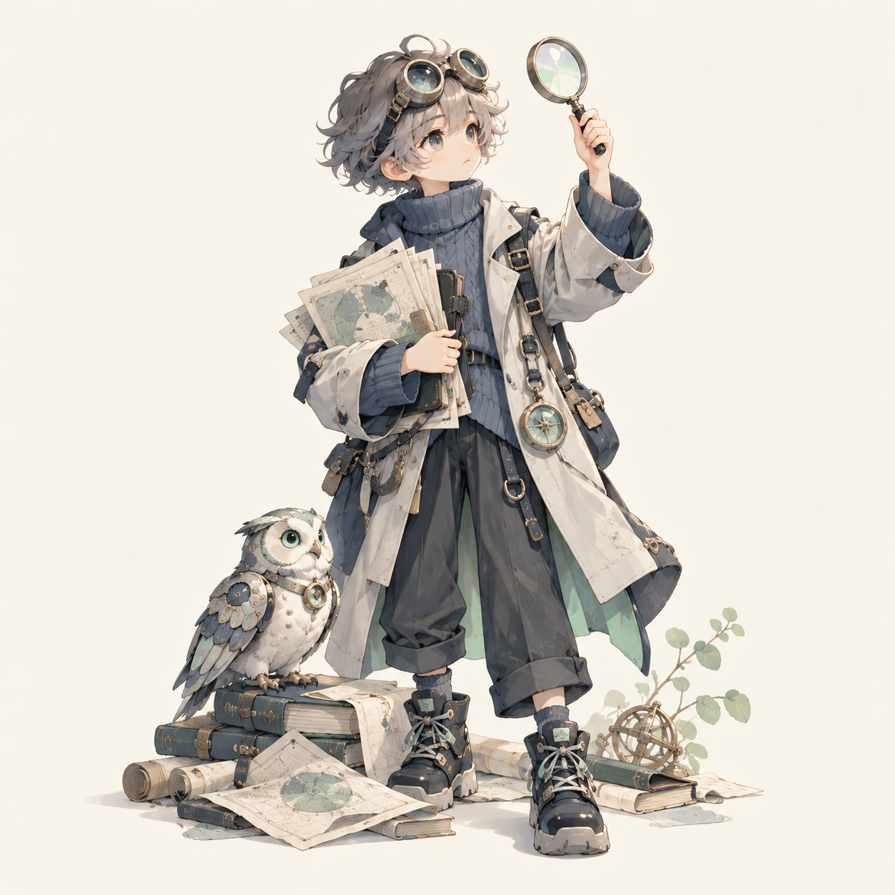
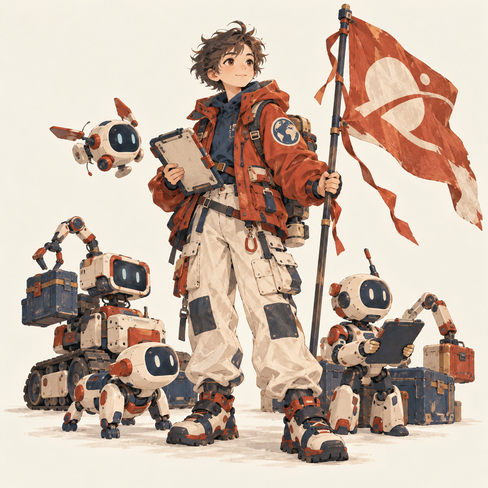
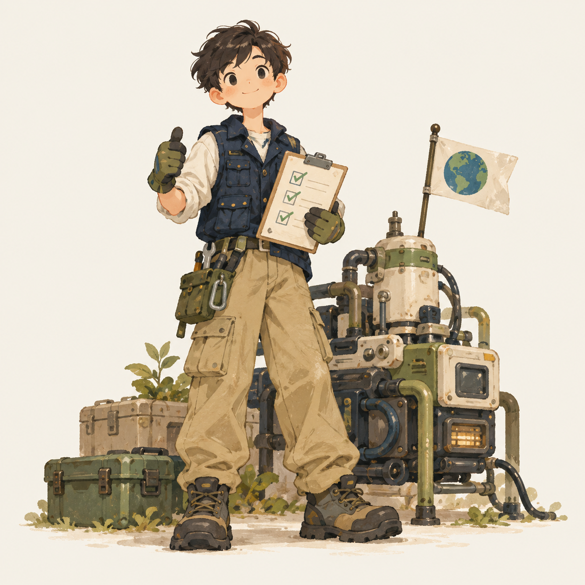
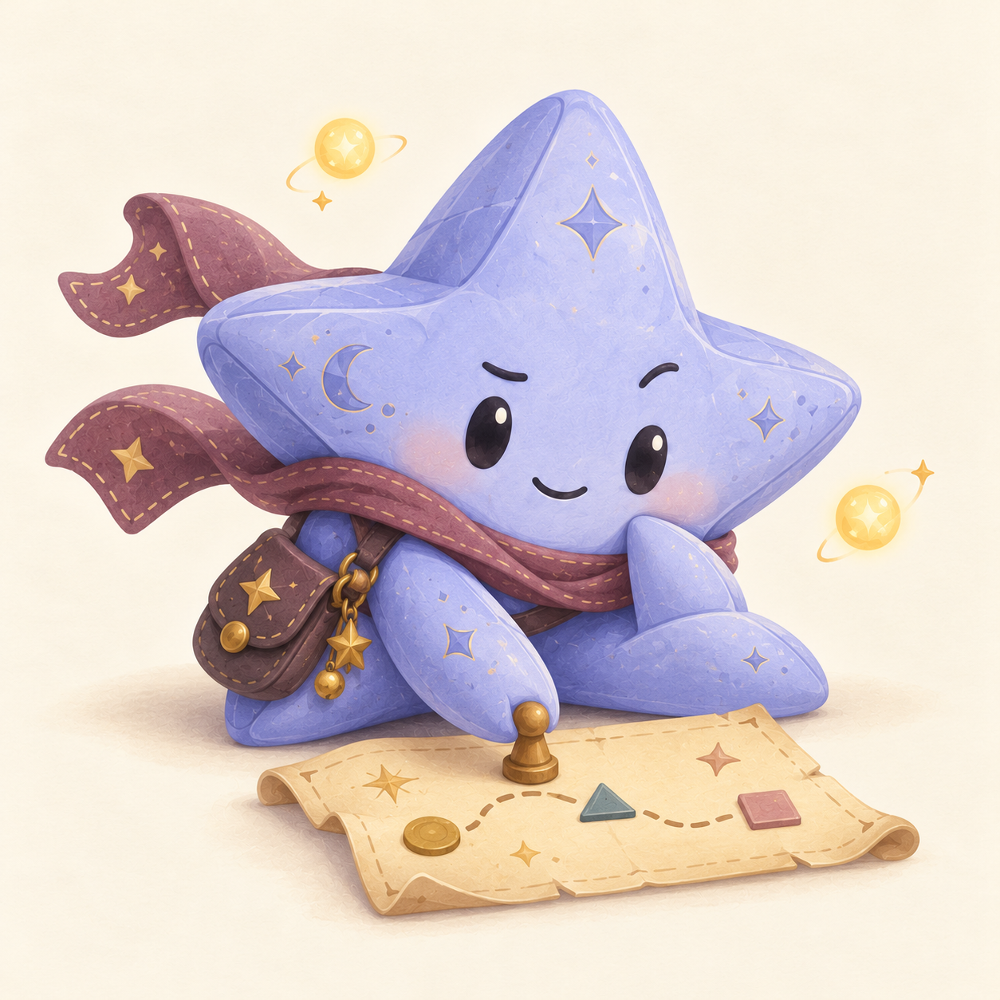
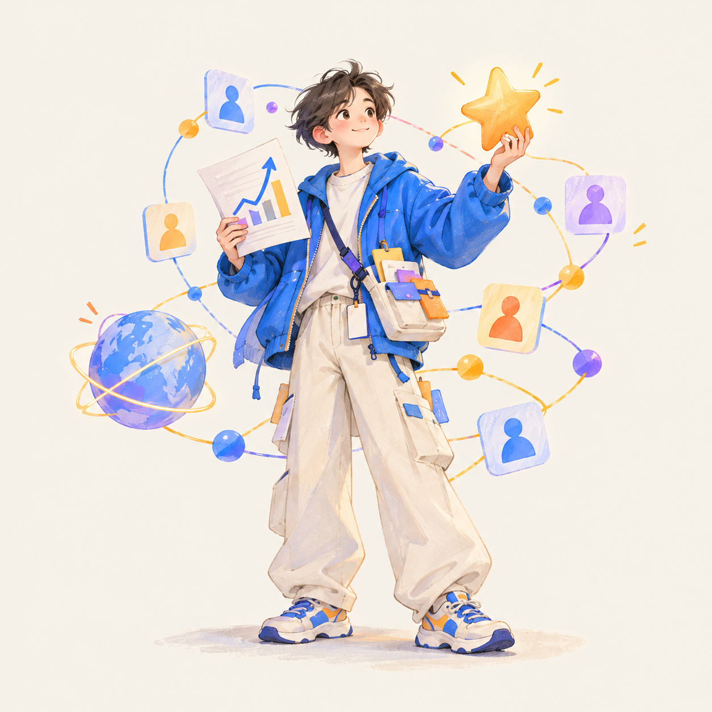
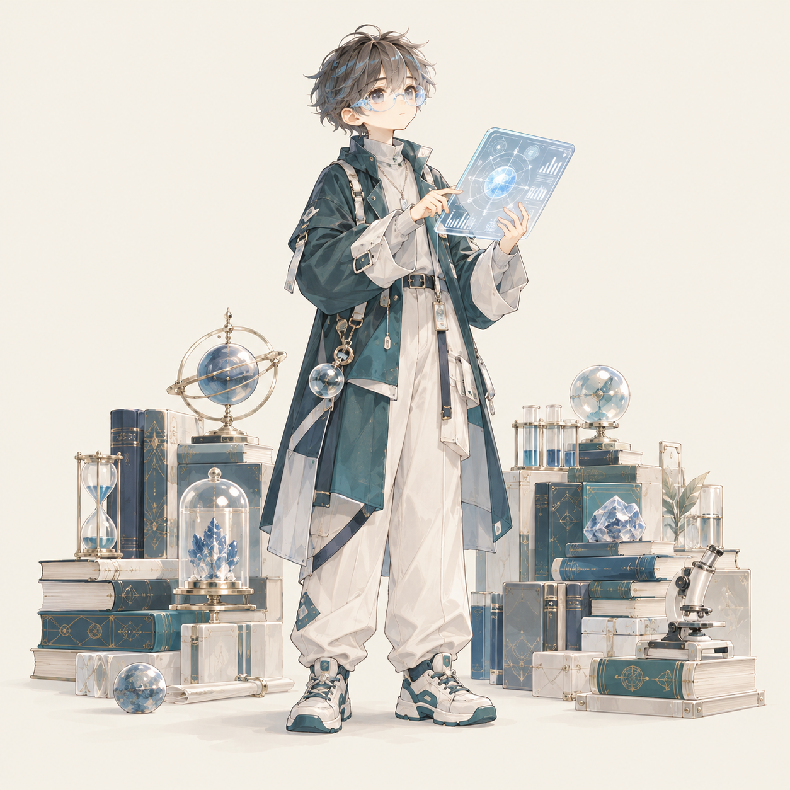
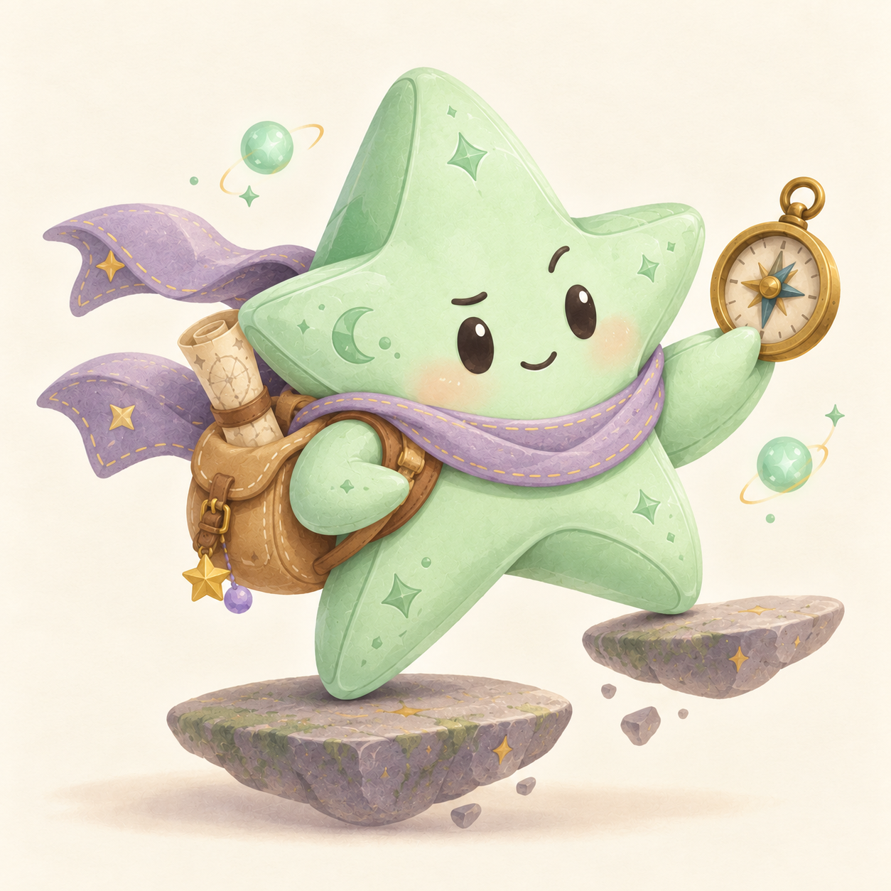
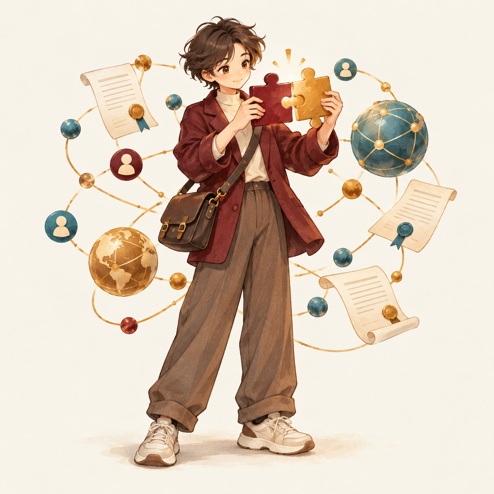
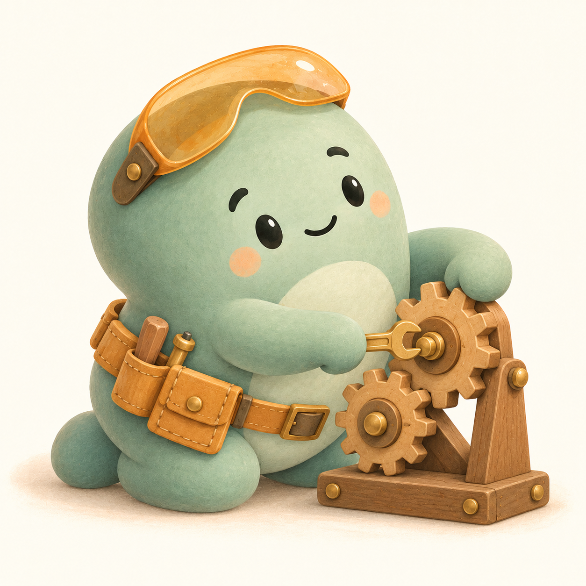

秩序建筑师
MACS · The Architect
理想很大，计划很细。
前四维决定角色，第五维展示成长路线。云朵、豆子和星星，16 位小精灵用表情、动作和道具呈现不同的职业探索偏好。

MACS · The Architect
理想很大，计划很细。
MACF · The Alchemist
没有解决不了的分歧，只有还没聊透的问题。

MAIS · The Analyst
先看数据，再谈理想。
MAIF · The Thinker
脑子里永远有一个新问题。

MPCS · The Commander
理想主义者里的项目经理。
MPCF · The Diplomat
人脉是桥梁，行动才是目的。

MPIS · The Operator
事情交给我，结果给你看。
MPIF · The Maverick
先把问题解决，其他的路上再说。

GACS · The Strategist
职业发展也要讲究战略布局。

GACF · The Connector
对机会的嗅觉，比会议通知还灵敏。

GAIS · The Specialist
专业水平，就是你的职业安全感。

GAIF · The Explorer
职业道路太直，走起来有点无聊。
GPCS · The Manager
进度、预算、结果，缺一不可。

GPCF · The Mobilizer
给我一个目标，我去找人、找资源、找办法。

GPIS · The Optimizer
时间很贵，流程最好别浪费。
GPIF · The Pioneer
路还没修好，你已经准备出发了。